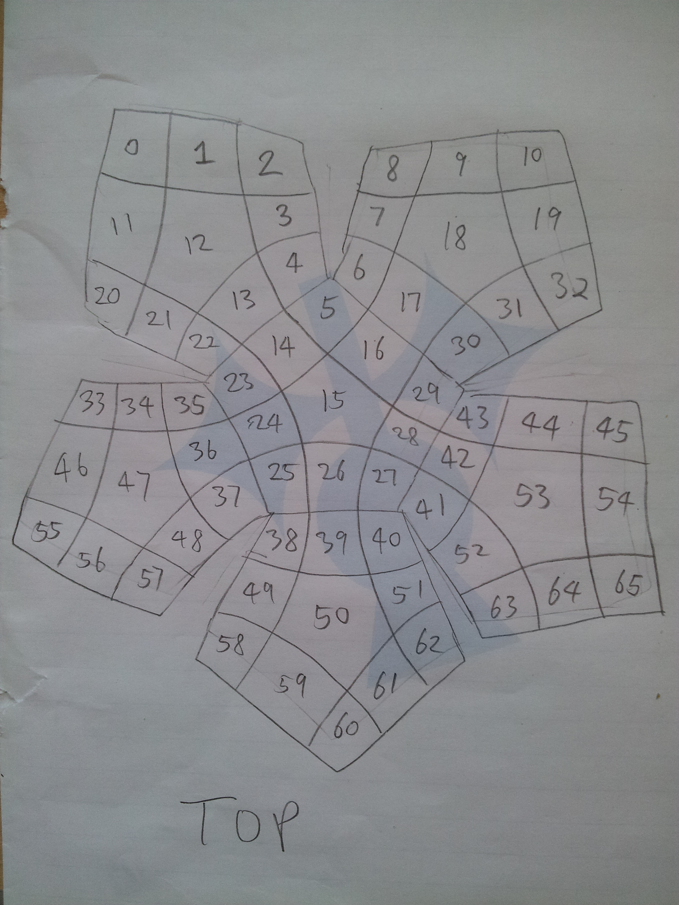
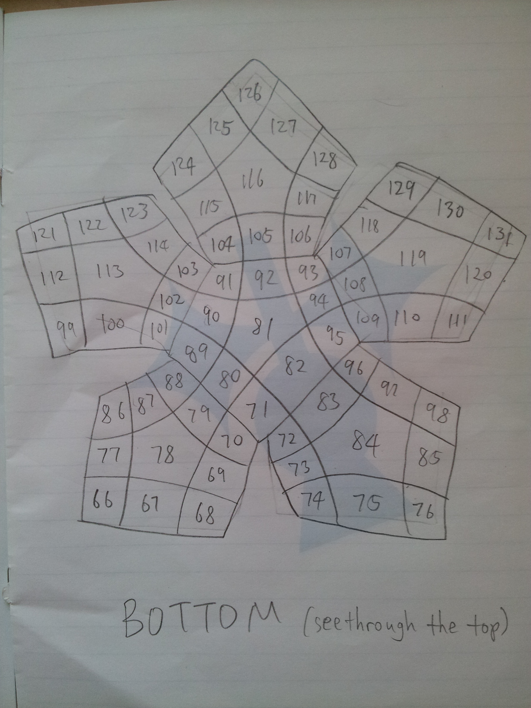

This is a demonstration of solving the group represented by the Megaminx puzzle.
Right click and go to "Inspect Element", and from there go to the Console to view the output.
The computation takes a little time, so wait a few seconds for the output to show up.

